Todo 是计划
它回答“现在做到哪、接下来做什么”。不是第二个 Beads，也不是 Agent roster 的副本。
本报告决定一个大方向：不打开完整 Work 界面时，用户平时能看到多少 Todo。现已选定 A；快捷键、设置、完成项停留多久，仍留给后续决定。
当前 Claude Code 把任务清单与后台 /tasks 明确分开；官方说明一次最多显示五项，空清单不出现。rpiv-todo 已证明 Pi 0.83 能持续、自动、可恢复地显示任务，但 upstream 默认 panel 最多会占十三行。
| 参考 | 平时看见什么 | 完整查看 | 我们取什么 |
|---|---|---|---|
| Claude Code 2.1.220 | 最多 5 条任务，再用 … +N pending 收起；完成、进行、待办同屏；空时消失 |
直接让 Claude 显示全部；Ctrl+T 只负责显隐 | 安静的行样式、硬上限、清楚的 overflow |
| rpiv-todo 2.3.1 | 标题 + 任务树 + overflow；默认内容预算 12 行，另加 1 个 spacer | /todos 把完整列表写成通知；panel 可折叠 |
状态恢复、自动出现/消失、优先保留未完成项 |
| Pi Stuff 既有决定 | Todo 在 editor 上方；已选定的 Agent roster 在 editor 下方 | 全宽、divider-led、非浮动 Work Command Dialog | 不复制 upstream tool renderer，不让完整列表污染 transcript |
它回答“现在做到哪、接下来做什么”。不是第二个 Beads，也不是 Agent roster 的副本。
下方 roster 回答“哪些 Agent 在工作”。Todo 与 Agent 同时出现，但不重复 tool activity。
查看全部、添加、取消、排序进入 Work Command Dialog；不使用浮窗，也不把列表写进对话。
每张图都保留同一段 transcript、同一行未发送输入、同一个下方 Agent roster。A 占六行；B 占一行；C 正常运行时占零行、等待用户时占一行。
不画标题、tree 或 card。最多五条任务，再加一条 +N；完成、当前、下一步同时看见。它不是 rpiv-todo 的完整常驻 panel。
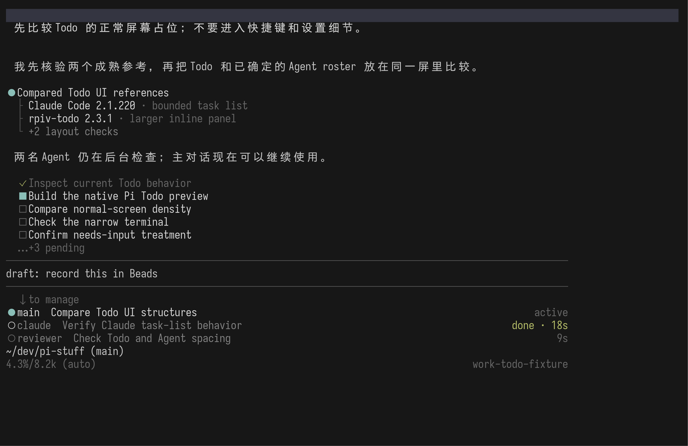
+3 pending；输入与下方 Agent roster 同时存在。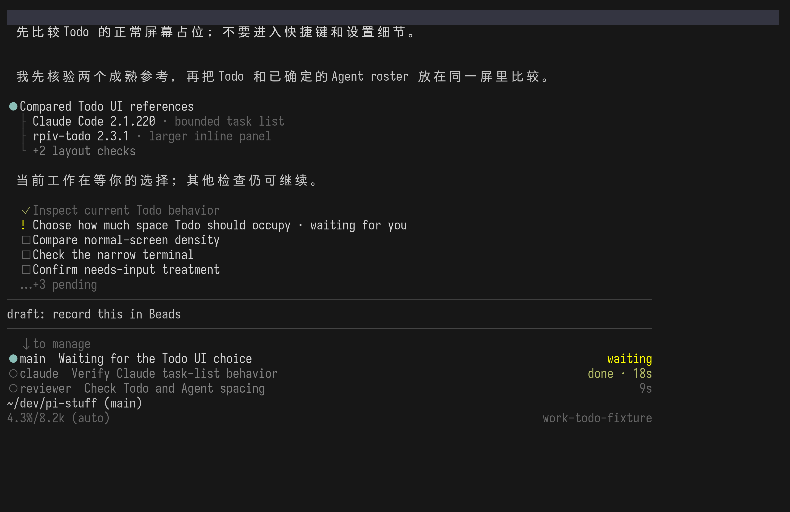
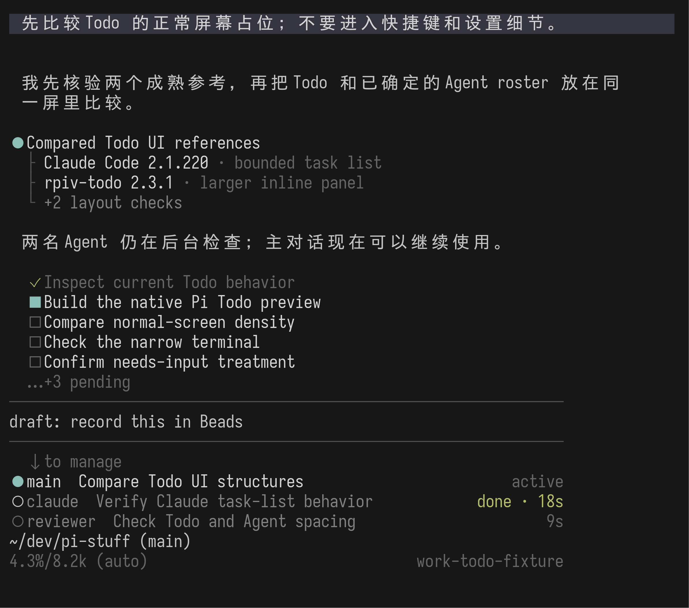
用户不用打开任何界面，就能检查 Agent 是否漏了步骤、顺序是否合理，以及当前工作与下一步是否匹配。
Todo 与 Agent 从上下夹住 editor。只要上限失控，它会很快变成 rpiv-todo 式 dashboard，因此“最多五条”是结构的一部分。
只显示当前进行项、已完成数与剩余数。用户一直知道“正在做什么”，但看不到具体下一步和计划范围。
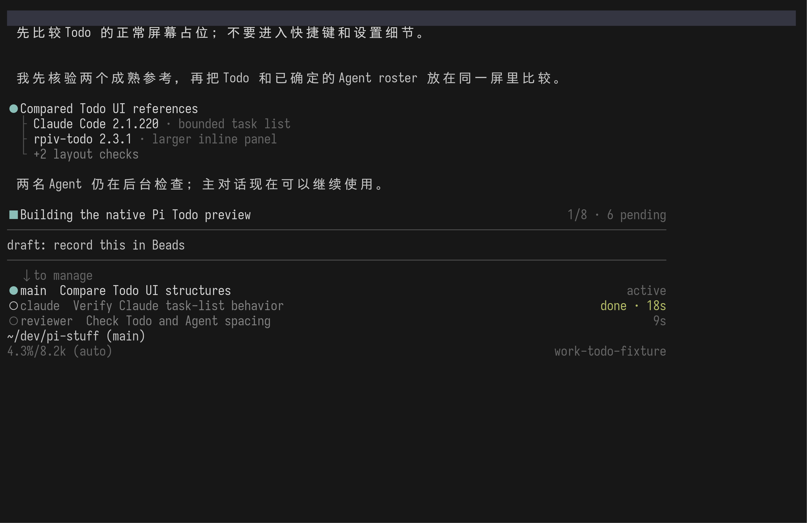
1/8 · 6 pending 只给数量，不解释计划。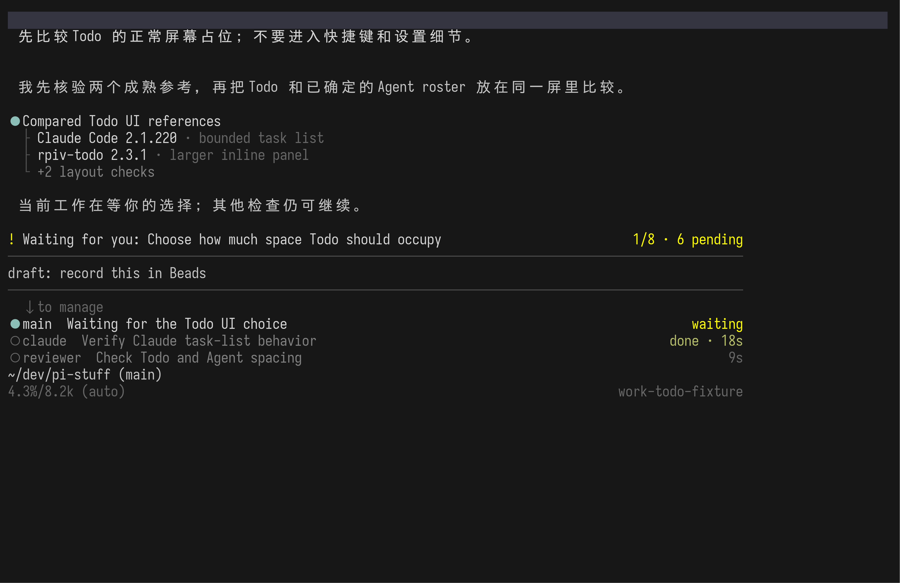
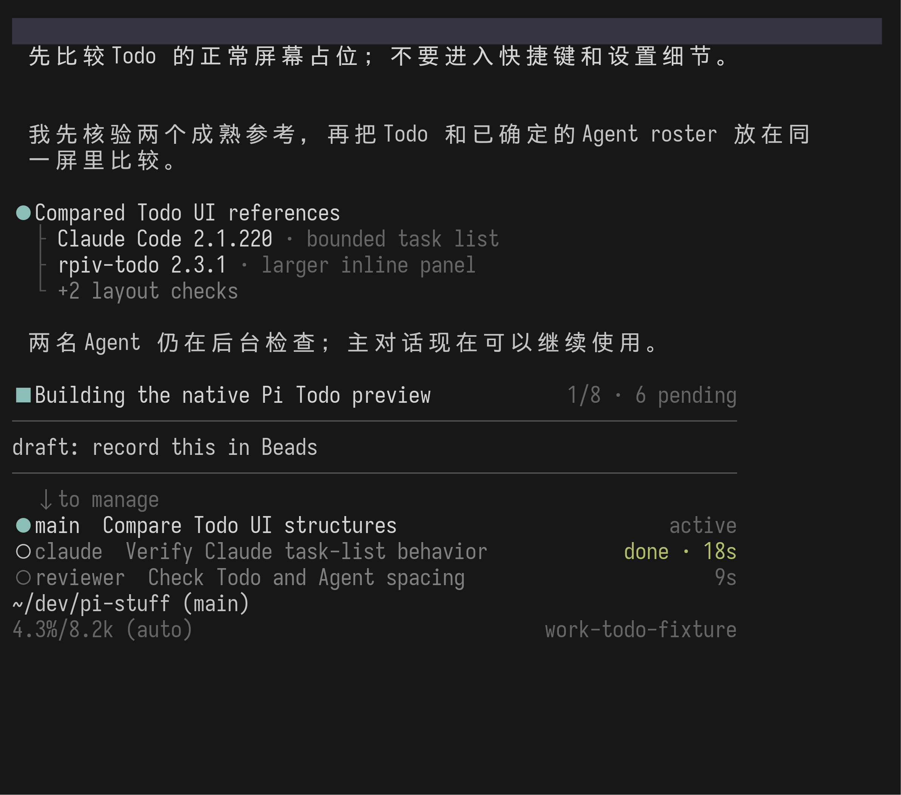
更像“我现在做到这里”，而不是一个可检查的计划。连续对话最轻，长期信任主要依赖完整 Work 入口。
如果选择 A，B 仍可成为用户主动收起清单后的候选形态；这不是本轮需要同时决定的细节。
正常工作时完全不出现。只有任务需要用户处理时，editor 上方才出现一行警示；完整计划始终通过 Work Command Dialog 查看。
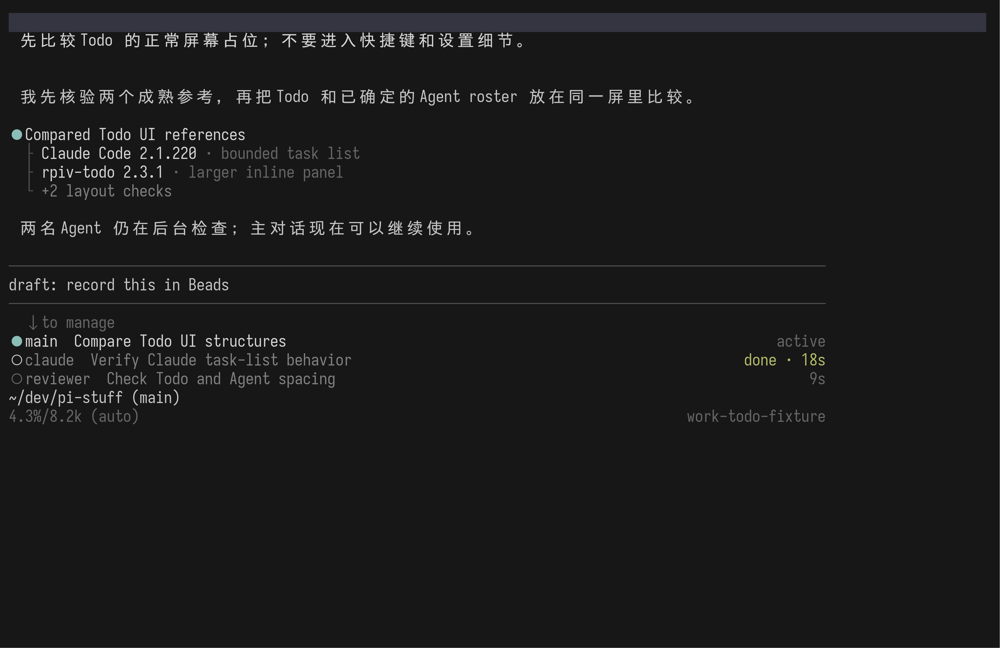
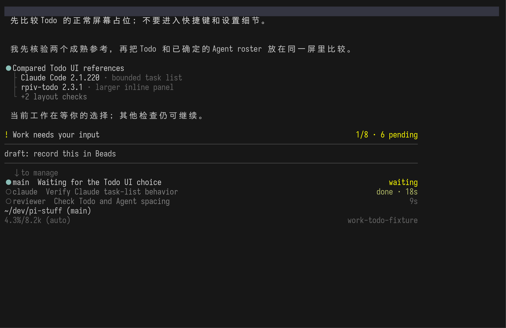
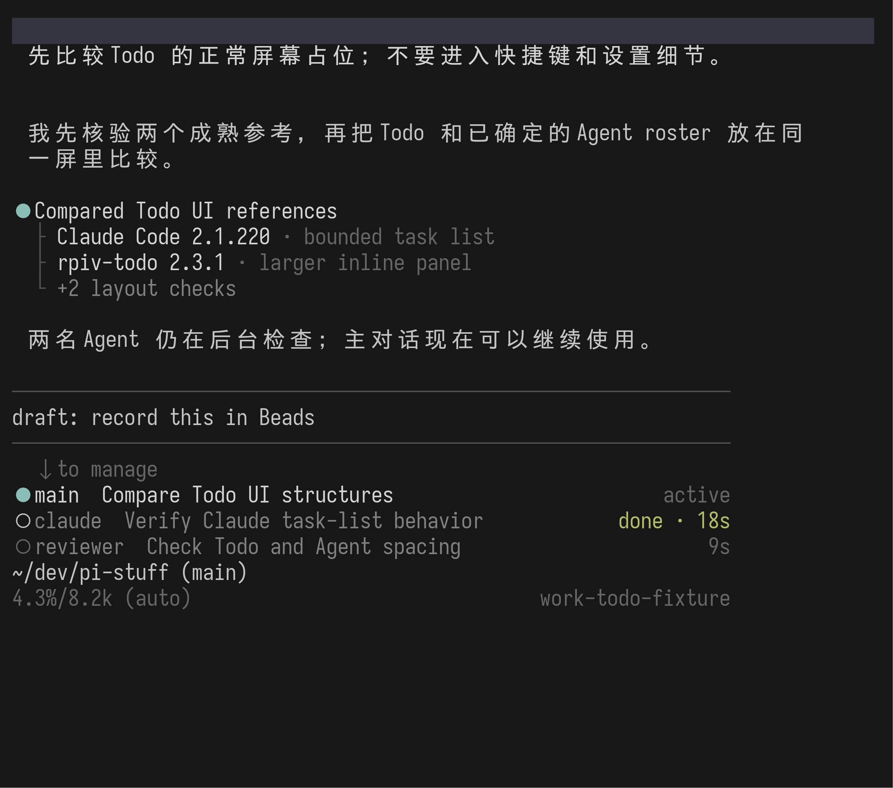
零常驻高度，完全避免 Todo 与 Agent roster 的空间竞争。
Todo 的价值不只是帮模型记忆，也是让用户看见并纠正计划。默认隐藏会失去后一半价值。
以下运行校验版本号与发布二进制 SHA-256 674f61…c863。隔离 HOME 后，localhost Messages fixture 创建七条真实 TaskCreate/TaskUpdate 记录；没有用户凭据、外部模型请求或项目数据。
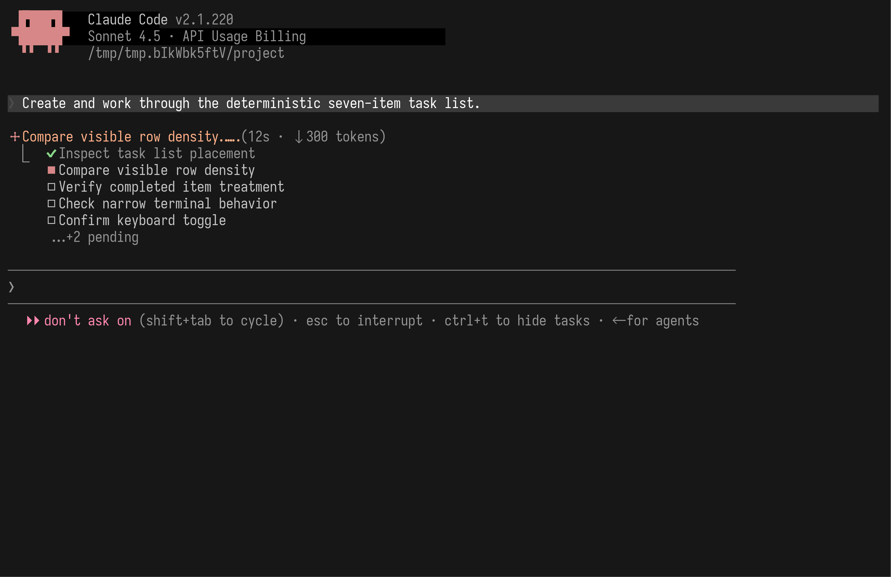
… +2 pending；勾、实心方块、空心方块分别表示完成、进行和待办。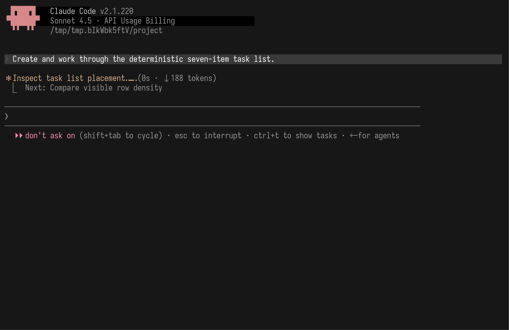
Next: …，footer 提示切换为 show tasks；真实任务仍继续运行。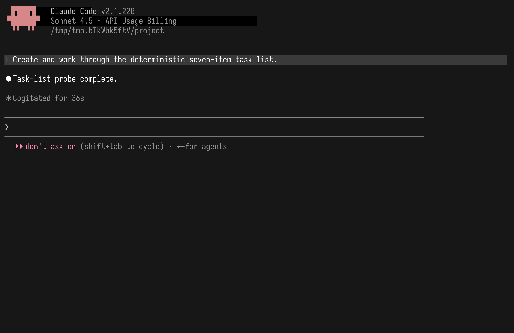
B 更省空间，却把 Todo 变成一句“正在做什么”；C 最干净，却让 Todo 近乎不可见。A 是唯一让用户不用打开别的界面，就能同时检查当前项、下一步和计划边界的方案。
+N；不是可无限调大的 panel。blockedBy；等待用户回答或授权属于 Work 的 attention 信息，只在共同的显示层合并呈现。Pi 方案由 Pi 0.83 capture script、throwaway Extension 与 model-free session fixture 生成。Claude reference 由 pinned-release capture 与 localhost fixture 生成。外部事实来自 Claude Code task-list docs、rpiv-todo panel source 与 overflow selector。